My Game Development Projects
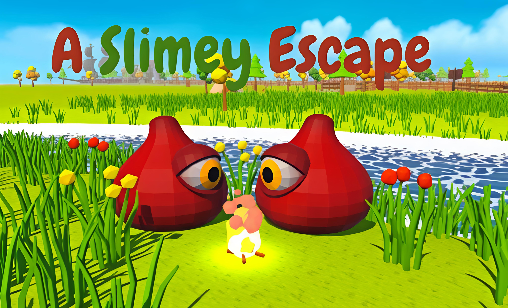
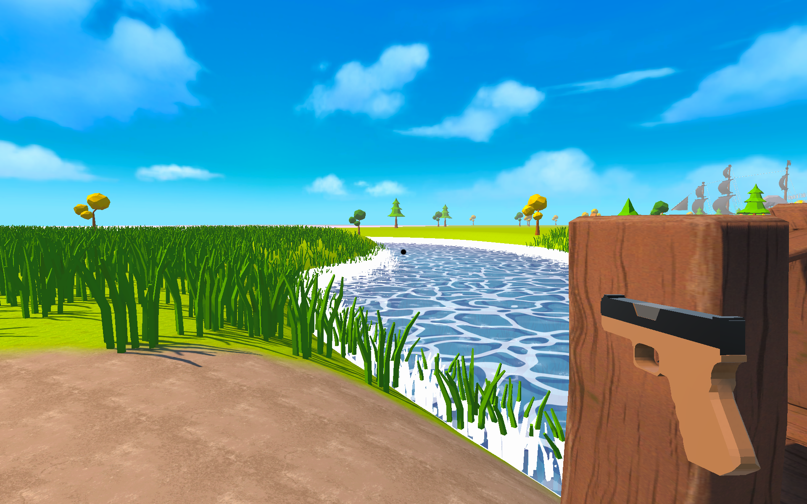
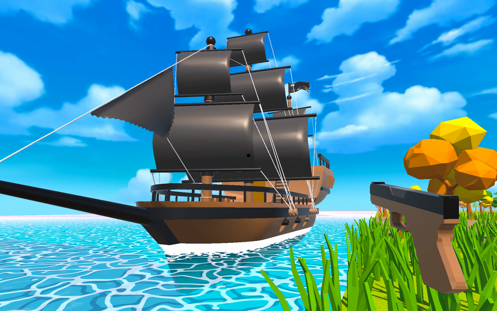
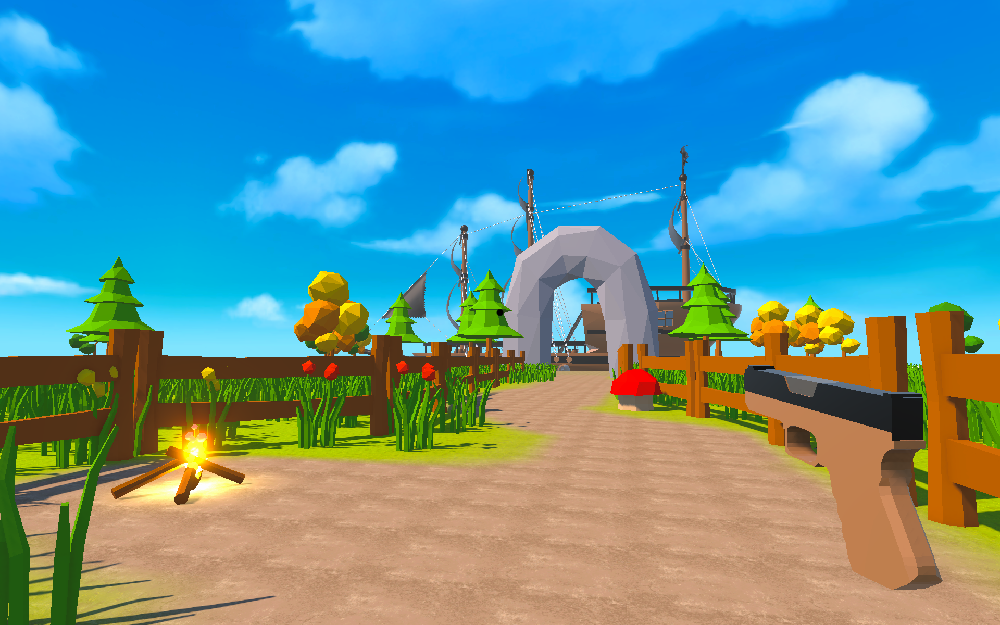
A Slimey Escape
An exciting first-person adventure game built with Unity Engine. Made for the Brackey's Game Jam 2026.1. It features a omnious Island with "Slimes" infesting it. The player must explore the island, solve puzzles, and uncover its secrets while slaying the dangerous slimes.
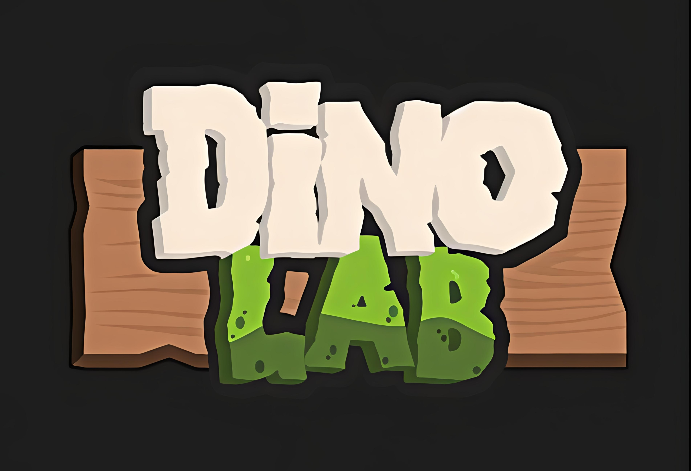
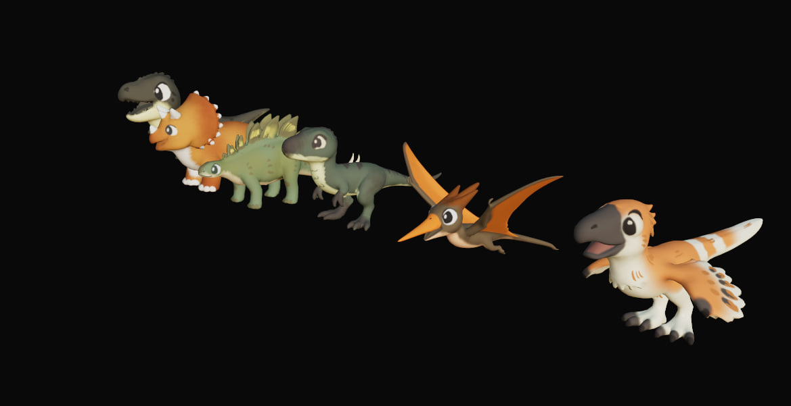

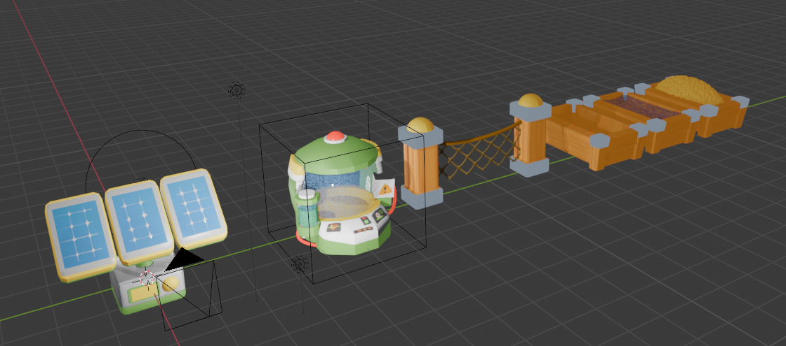
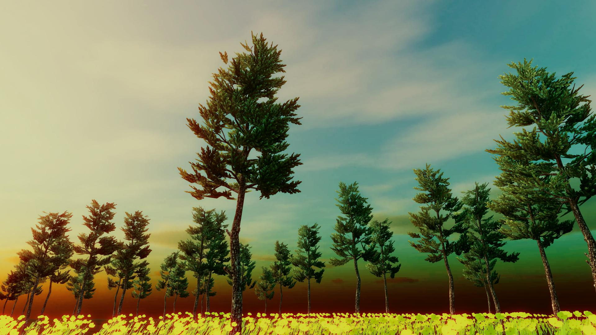


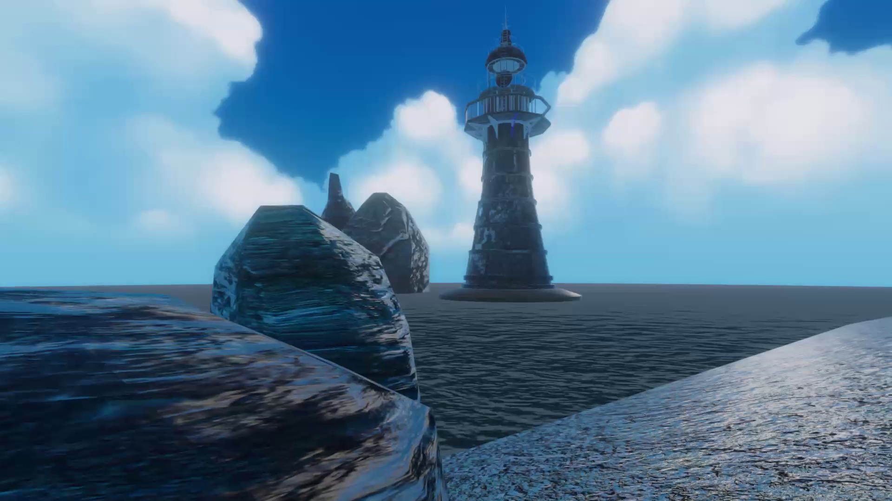
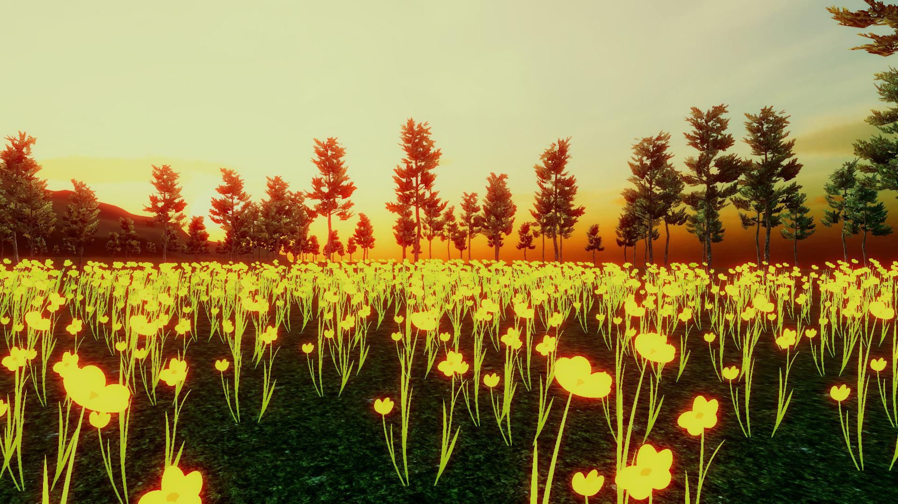
Environments Research
A collection of diverse environments that i tried to make in unity and blender. demonstrating various artistic styles, lighting techniques and themes. The project was a personal exploration of environment design, allowing me to experiment with different aesthetics and technical approaches to create immersive and visually appealing game worlds.
FPS Gun controller
Implemented a FPS gun controller to experiment with physics impulses, gun sway mechanics. The system is modular and can be easily integrated into any FPS game. Started as a passion project, nopw turned out to be very helpful in implementing the intricacies of gun mechanics and physics interactions in game development.
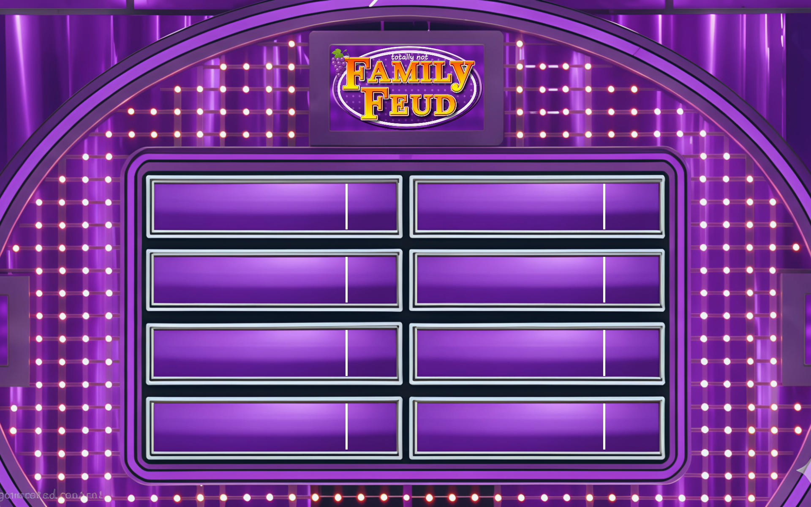
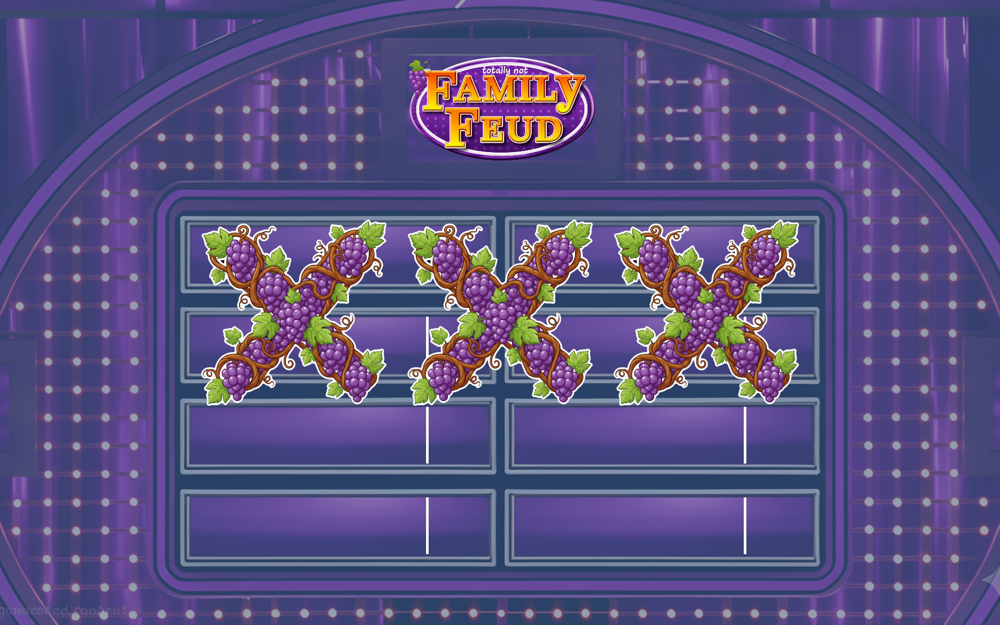
Family Fued Software
A family fued style quiz game built in unity. This software was made for a college event where we hosted a family fued style game show. Natievly built in unity, The software features a purple "grape" theme that represents the college society that hosted the event.
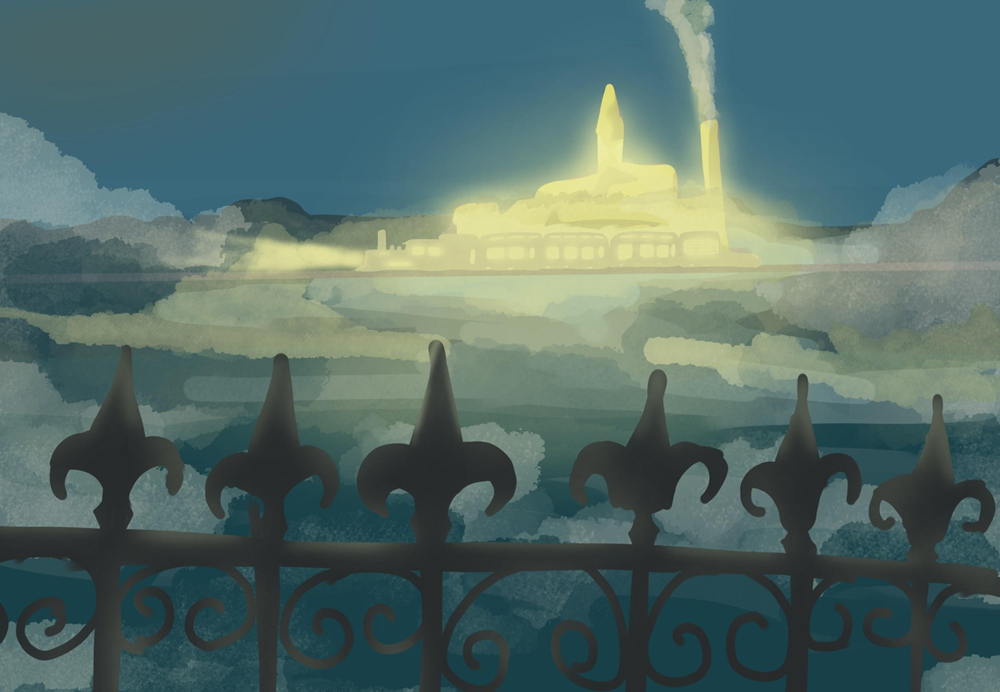
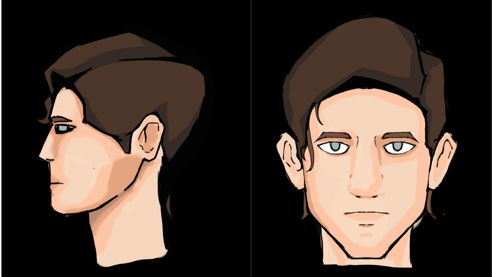
The Runaway Train: In active Development
The Runaway Train is a walking simulator set in a dystopian world.
The game is currently in active development, and it is a passion project of mine.
The game features an immersive storyline that explores themes of Time travel, hope and Trauma.
Being developed in unity, it has it's own Time travel system that is expandable and modular.
currently working on a system to create predictable time loops and paradoxes with the unity state machine.
These are some early environment art and concepts for the game, the Progress willbe shared online shortly on instagram.